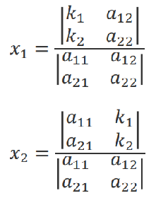
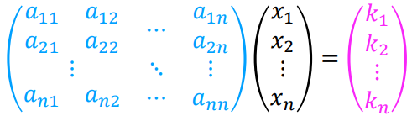
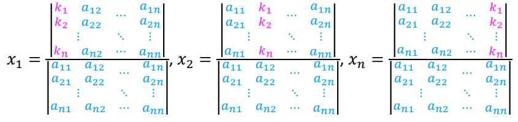

Cramer's Rule
Cramer's rule is a method to solve a system of linear equations with as many equations as unknowns. The solution is expressed in terms of determinates of the coefficient matrix and of the matrices obtained from it by replacing one column by the column vector of right-hand-sides of the equations.
Lets look at a two linear equation system;
| a11x1 + a12x2 = k1 |
| a21x1 + a22x2 = k2 |
The solutioncan be written as;
x1 = (a22k1 - a12k2) / (a11a22 - a21a12)x2 = (a11k2 - a21k1) / (a11a22 - a21a12)
The sections in blue match for both solutions.
We know that the determinant of a 2x2 matix is;
| det(A)= | |A| = | \begin{bmatrix} a & b\\ c & d\end{bmatrix} | = ad-cb |
Or;
| det(A)= | |A| = | \begin{bmatrix} a_{11} & a_{12} \\ a_{21} & a_{22}\end{bmatrix} | = a11a22 - a21a12 |
So, we notice that the denominators are identical to this determinant. This is the determinant of the coefficients or the determinant of the system.
If this determinant is zero, then the set of equations has no unique solution.
If we look at the numerators of the two equations;
x1 = (a22k1 - a12k2) / (a11a22 - a21a12)x2 = (a11k2 - a21k1) / (a11a22 - a21a12)
These can be written as;
\begin{bmatrix} k_{1} & a_{12} \\ k_{2} & a_{22} \end{bmatrix}
\begin{bmatrix} a_{11} & k_{1}\\ a_{21} & k_{2}\end{bmatrix}
Taking the two matrices for X1 and X2 we can solve with the following equation using Cramer's rule for 2x2 systems;
Any system of simultaneous equations can be written as so;


AX = K
The solution of a system of simultaneous equations AX = K can be obtained as a ratio of two determinants:
